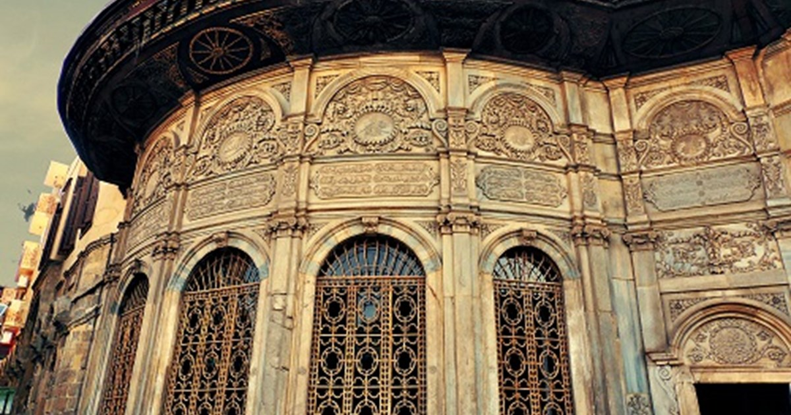

المفضلة

شارع المعز
شارع المعز لدين الله الفاطمي هو أحد أهم الشوارع التاريخية في القاهرة القديمة، ويمتد من باب الفتوح شمالاً حتى باب زويلة جنوباً.

سبيل محمد علي
سبيل محمد علي هو أحد أهم المعالم التاريخية في شارع المعز، بناه محمد علي باشا في القرن التاسع عشر.